https://ctf.bugku.com/challenges#love
下载文件后运行一下看看
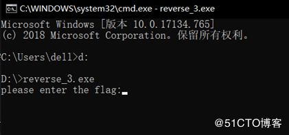
随便输入个123看看
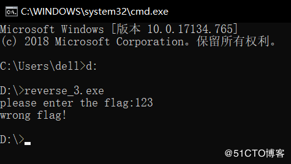
解题思路：
很常见的程序流程，就是输入字符串与程序里的字符串对比，来输出结果，这时候我们有两种选择。
1.写个脚本来爆破。这是没有办法的办法，效率极低且不可靠，在某些情况下是唯一的办法，但在这道题没有必要，所以舍弃。
2.使用软件来调试程序代码，或直接反编译程序获得源码，在这里我用OllyDbg来调试程序。
解题流程：
拿到文件先来查壳
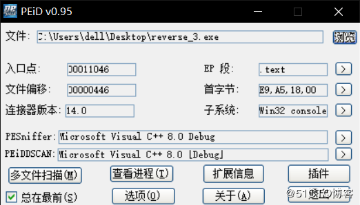
无壳，就是普通的c++编译的文件，使用OllyDbg打开文件
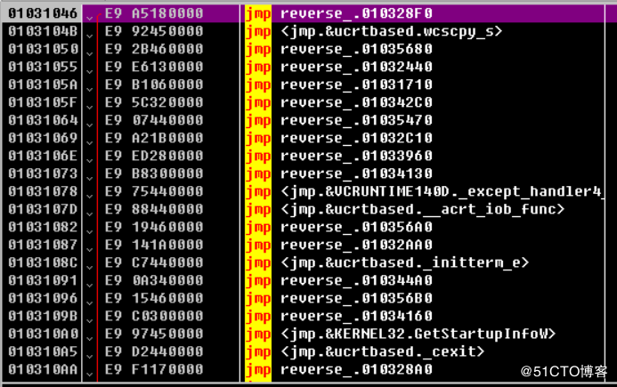
没有什么头绪，右键选择 中文搜索引擎->3.智能搜索
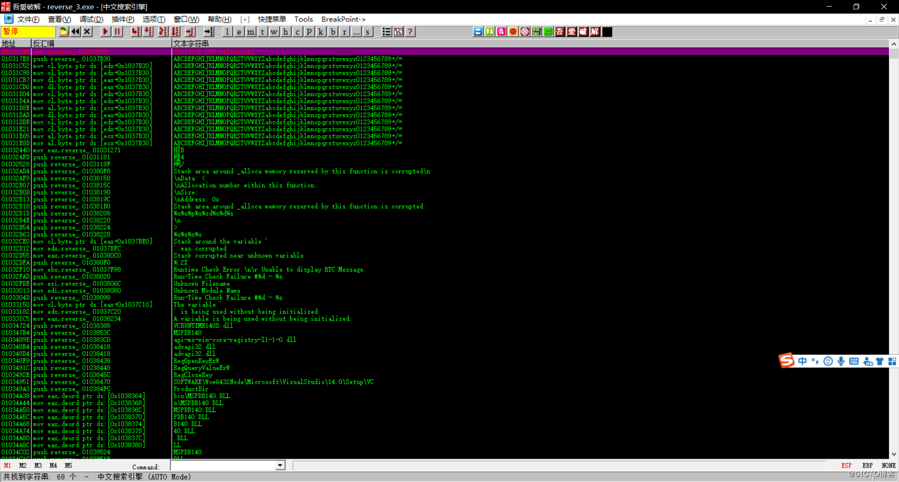
其中有几条很眼熟
这不就是我们输入字符串后提示的字符串吗，点进去看看
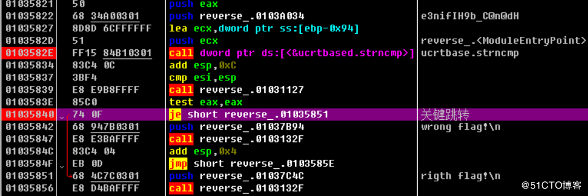
可以看到1035840处有一个跳转，根据1035842压栈的字符串来推断，1035847调用的函数是类似于printf的函数，也就是说1035840处的跳转决定了输出的是”wrong flag”还是”right flag”，我们继续向上看，寻找是什么控制关键跳转的执行。很明显，在103582e处调用了strncmp函数,而在其上，压入了一个奇怪的字符串进栈，根据开头猜的程序功能，要么，这就是程序想要我们输入的字符串。要么，是把我们输入的字符串加密后对比的字符串。而strncmp的结果就决定了关键跳转的执行与否。我们在strncmp处下一个断点，运行程序，输入1234567890。
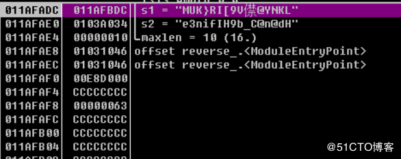
对比栈里的数据可以得出，ecx中存储的是我们输入的字符串加密后的字符串，eax中存储着要对比多少个字符，那我们继续向上翻，找找是什么把我们输入的字符串(即ecx)加密。
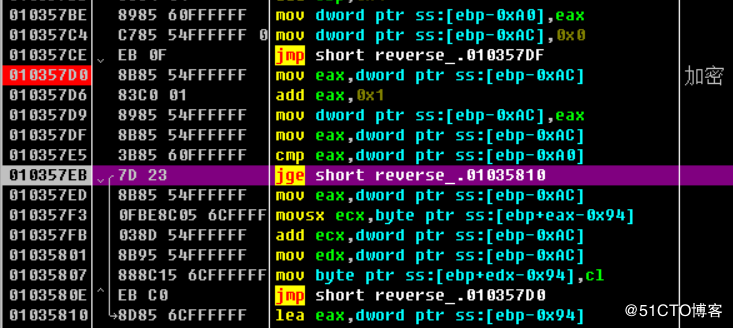
在其上不远，我们就发现了一段很可疑的代码，我们在10357d0处下一个断点，重新运行程序，再次输入1234567890
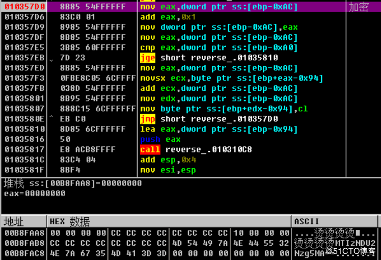
运行到断点后，查看ebp-0xac附近的内存空间，发现了一段base64代码
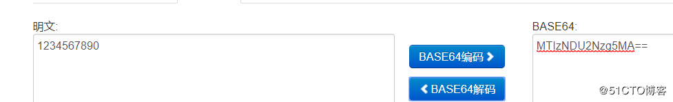
也就是我们输入的字符串
分析这段加密代码
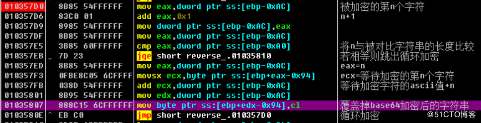
然后通过这段汇编代码和被对比字符串 “e3nifIH9b_C@n@dH” 来构造python脚本
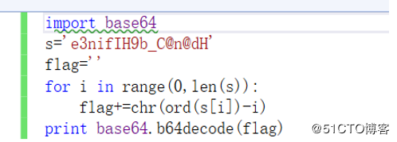
得到flag
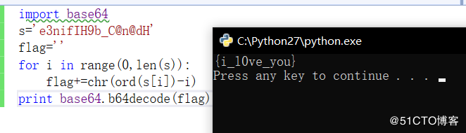
End


Ctrl+Enter 发布
发布
取消